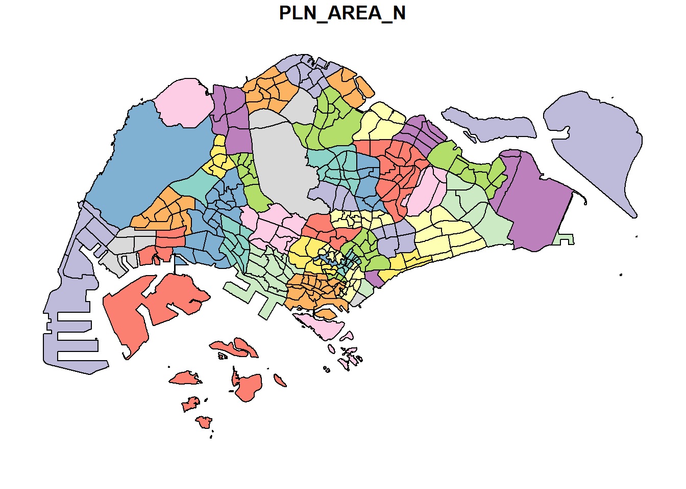
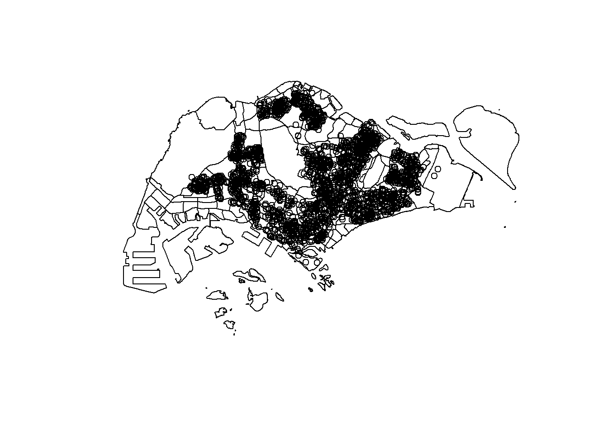
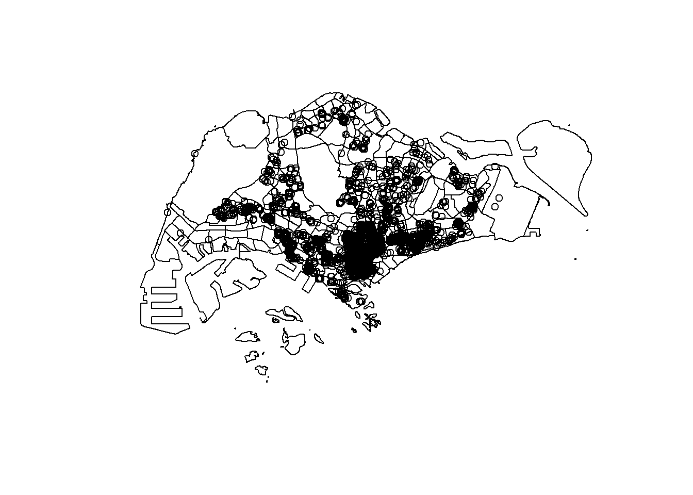
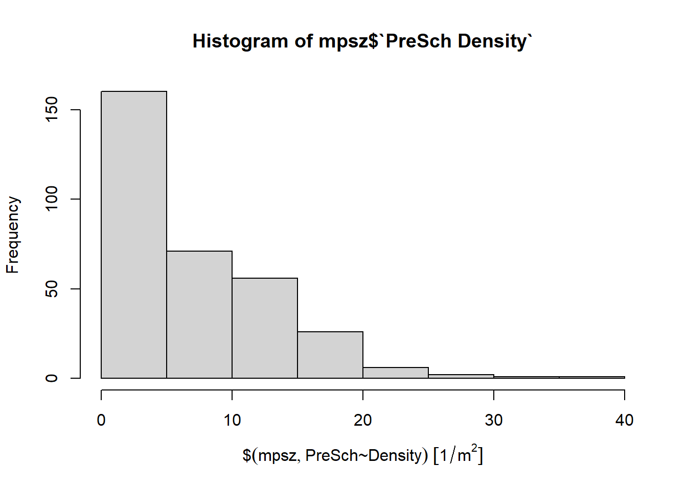
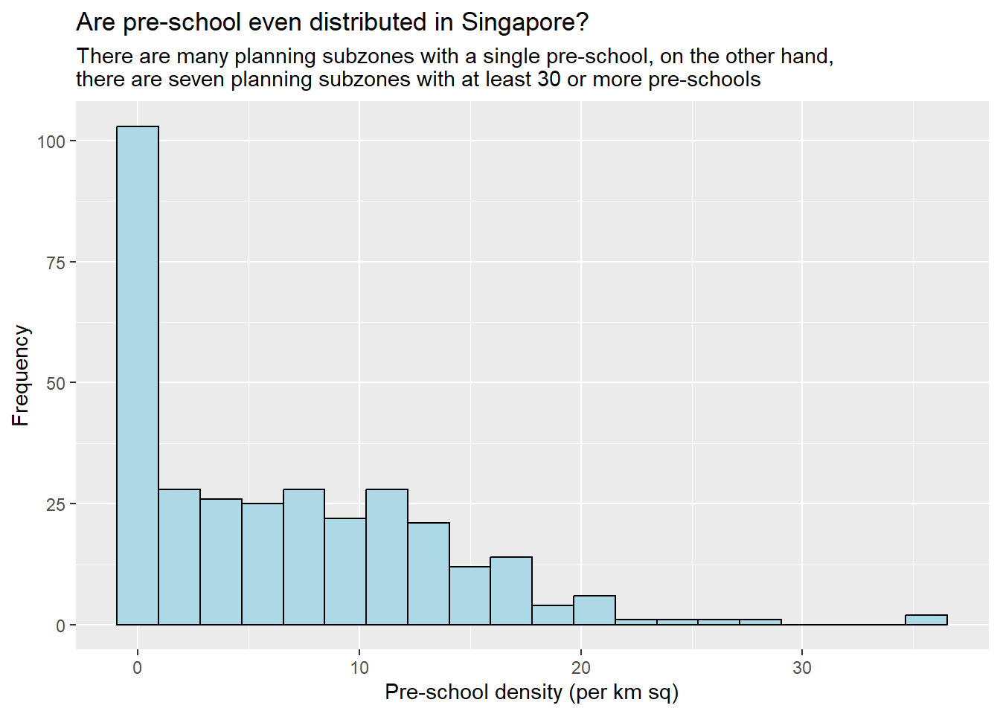

pacman::p_load(sf, tidyverse)Hands-on Exercise 1
Getting Started
Install and launching R packages
The code chunk below uses p_load() of pacman package to check if sf and tidyverse packages are installed in the computer. If they are, then they will be launched into R.
Datasets
The following datasets will be used:
MP14_SUBZONE_WEB_PL, a polygon feature layer in ESRI shapefile format (Master Plan 2014 Subzone Boundary)
CyclingPath, a line feature layer in ESRI shapefile format (Cycling Path)
PreSchool, a point feature layer in kml file format (Pre-Schools Location)
Latest Airbnb Singapore Listing Data (Inside Airbnb)
Importing the data
st_read() function of the sf package will be used to import MP14_SUBZONE_WEB_PL shapefile into mpsz.
mpsz = st_read(dsn = "data/geospatial",
layer = "MP14_SUBZONE_WEB_PL")Reading layer `MP14_SUBZONE_WEB_PL' from data source
`C:\Users\zongy\OneDrive\Desktop\SMU\ISSS626 - Geospatial Analytics\zongyin-tan\ISSS626-Geospatial-zytan\Hands-on_Ex\Hands-on_Ex01\data\geospatial'
using driver `ESRI Shapefile'
Simple feature collection with 323 features and 15 fields
Geometry type: MULTIPOLYGON
Dimension: XY
Bounding box: xmin: 2667.538 ymin: 15748.72 xmax: 56396.44 ymax: 50256.33
Projected CRS: SVY21The same function will be used to import the CyclingPath shapefile into cyclingpath as well.
cyclingpath = st_read(dsn = "data/geospatial",
layer = "CyclingPathGazette")Reading layer `CyclingPathGazette' from data source
`C:\Users\zongy\OneDrive\Desktop\SMU\ISSS626 - Geospatial Analytics\zongyin-tan\ISSS626-Geospatial-zytan\Hands-on_Ex\Hands-on_Ex01\data\geospatial'
using driver `ESRI Shapefile'
Simple feature collection with 4651 features and 19 fields
Geometry type: MULTILINESTRING
Dimension: XY
Bounding box: xmin: 11721.1 ymin: 27550.13 xmax: 42809.37 ymax: 49702.59
Projected CRS: SVY21Since the PreSchool file is in kml format. The code chunk below will be used to import the kml into R.
preschool = st_read("data/geospatial/PreSchoolsLocation.kml")Reading layer `PRESCHOOLS_LOCATION' from data source
`C:\Users\zongy\OneDrive\Desktop\SMU\ISSS626 - Geospatial Analytics\zongyin-tan\ISSS626-Geospatial-zytan\Hands-on_Ex\Hands-on_Ex01\data\geospatial\PreSchoolsLocation.kml'
using driver `KML'
Simple feature collection with 2290 features and 2 fields
Geometry type: POINT
Dimension: XYZ
Bounding box: xmin: 103.6878 ymin: 1.247759 xmax: 103.9897 ymax: 1.462134
z_range: zmin: 0 zmax: 0
Geodetic CRS: WGS 84Checking the contents of the dataframe
st_geometry() extracts or set the geometry column of the object. In this case, we are accessing the spatial information stored in our objects.
The following code chunk is what we will use to extract from mpsz.
st_geometry(mpsz)Geometry set for 323 features
Geometry type: MULTIPOLYGON
Dimension: XY
Bounding box: xmin: 2667.538 ymin: 15748.72 xmax: 56396.44 ymax: 50256.33
Projected CRS: SVY21
First 5 geometries:MULTIPOLYGON (((31495.56 30140.01, 31980.96 296...MULTIPOLYGON (((29092.28 30021.89, 29119.64 300...MULTIPOLYGON (((29932.33 29879.12, 29947.32 298...MULTIPOLYGON (((27131.28 30059.73, 27088.33 297...MULTIPOLYGON (((26451.03 30396.46, 26440.47 303...Besides the basic geospatial feature information, we also would like to learn more about the associated attribute information stored in our data frame. We will use glimpse() to show more information of our mpsz object.
glimpse(mpsz)Rows: 323
Columns: 16
$ OBJECTID <int> 1, 2, 3, 4, 5, 6, 7, 8, 9, 10, 11, 12, 13, 14, 15, 16, 17, …
$ SUBZONE_NO <int> 1, 1, 3, 8, 3, 7, 9, 2, 13, 7, 12, 6, 1, 5, 1, 1, 3, 2, 2, …
$ SUBZONE_N <chr> "MARINA SOUTH", "PEARL'S HILL", "BOAT QUAY", "HENDERSON HIL…
$ SUBZONE_C <chr> "MSSZ01", "OTSZ01", "SRSZ03", "BMSZ08", "BMSZ03", "BMSZ07",…
$ CA_IND <chr> "Y", "Y", "Y", "N", "N", "N", "N", "Y", "N", "N", "N", "N",…
$ PLN_AREA_N <chr> "MARINA SOUTH", "OUTRAM", "SINGAPORE RIVER", "BUKIT MERAH",…
$ PLN_AREA_C <chr> "MS", "OT", "SR", "BM", "BM", "BM", "BM", "SR", "QT", "QT",…
$ REGION_N <chr> "CENTRAL REGION", "CENTRAL REGION", "CENTRAL REGION", "CENT…
$ REGION_C <chr> "CR", "CR", "CR", "CR", "CR", "CR", "CR", "CR", "CR", "CR",…
$ INC_CRC <chr> "5ED7EB253F99252E", "8C7149B9EB32EEFC", "C35FEFF02B13E0E5",…
$ FMEL_UPD_D <date> 2014-12-05, 2014-12-05, 2014-12-05, 2014-12-05, 2014-12-05…
$ X_ADDR <dbl> 31595.84, 28679.06, 29654.96, 26782.83, 26201.96, 25358.82,…
$ Y_ADDR <dbl> 29220.19, 29782.05, 29974.66, 29933.77, 30005.70, 29991.38,…
$ SHAPE_Leng <dbl> 5267.381, 3506.107, 1740.926, 3313.625, 2825.594, 4428.913,…
$ SHAPE_Area <dbl> 1630379.27, 559816.25, 160807.50, 595428.89, 387429.44, 103…
$ geometry <MULTIPOLYGON [m]> MULTIPOLYGON (((31495.56 30..., MULTIPOLYGON (…Sometimes we would like a quick look/preview of our object. In this case, we can use head() to preview both the attribute information and geometry values without printing the entire dataset.
head(mpsz, n=5) Simple feature collection with 5 features and 15 fields
Geometry type: MULTIPOLYGON
Dimension: XY
Bounding box: xmin: 25867.68 ymin: 28369.47 xmax: 32362.39 ymax: 30435.54
Projected CRS: SVY21
OBJECTID SUBZONE_NO SUBZONE_N SUBZONE_C CA_IND PLN_AREA_N
1 1 1 MARINA SOUTH MSSZ01 Y MARINA SOUTH
2 2 1 PEARL'S HILL OTSZ01 Y OUTRAM
3 3 3 BOAT QUAY SRSZ03 Y SINGAPORE RIVER
4 4 8 HENDERSON HILL BMSZ08 N BUKIT MERAH
5 5 3 REDHILL BMSZ03 N BUKIT MERAH
PLN_AREA_C REGION_N REGION_C INC_CRC FMEL_UPD_D X_ADDR
1 MS CENTRAL REGION CR 5ED7EB253F99252E 2014-12-05 31595.84
2 OT CENTRAL REGION CR 8C7149B9EB32EEFC 2014-12-05 28679.06
3 SR CENTRAL REGION CR C35FEFF02B13E0E5 2014-12-05 29654.96
4 BM CENTRAL REGION CR 3775D82C5DDBEFBD 2014-12-05 26782.83
5 BM CENTRAL REGION CR 85D9ABEF0A40678F 2014-12-05 26201.96
Y_ADDR SHAPE_Leng SHAPE_Area geometry
1 29220.19 5267.381 1630379.3 MULTIPOLYGON (((31495.56 30...
2 29782.05 3506.107 559816.2 MULTIPOLYGON (((29092.28 30...
3 29974.66 1740.926 160807.5 MULTIPOLYGON (((29932.33 29...
4 29933.77 3313.625 595428.9 MULTIPOLYGON (((27131.28 30...
5 30005.70 2825.594 387429.4 MULTIPOLYGON (((26451.03 30...Plotting the Data
We will now turn our attention to visualising the spatial features. Using plot() will give us a way to render the geospatial features stored in our object. By plotting the geometry, we will be able to see the shapes and boundaries that is in our data.
plot(mpsz)Warning: plotting the first 9 out of 15 attributes; use max.plot = 15 to plot
all
As shown, it has plotted all the attributes in our object. If we want to plot only the geometry outline, we will have to use the following code chunk.
plot(st_geometry(mpsz))
We may also want to plot specific attributes from our object. In this case we can select the specific attribute that we would like to plot.
plot(mpsz["PLN_AREA_N"])
We also may want to plot multiple layers to have more visualisation. In that case we can use the following chunk code which plots the preschool layer on top of the mpsz layer.
plot(st_geometry(mpsz))
plot(st_geometry(preschool),
add = TRUE)
The preschool layer is not shown in this example. This is because the EPSG codes are different and each layer is using a different CRS format.
To ensure correct visualisation and analysis, it is necessary to transform all layers into a common CRS before plotting or overlaying them.
Assigning EPSG code to a simple feature data frame
As shown above, the issue is due to the layers using different CRS format. We will proceed to check the CRS format of our mpsz using the following code chunk
st_crs(mpsz)Coordinate Reference System:
User input: SVY21
wkt:
PROJCRS["SVY21",
BASEGEOGCRS["SVY21[WGS84]",
DATUM["World Geodetic System 1984",
ELLIPSOID["WGS 84",6378137,298.257223563,
LENGTHUNIT["metre",1]],
ID["EPSG",6326]],
PRIMEM["Greenwich",0,
ANGLEUNIT["Degree",0.0174532925199433]]],
CONVERSION["unnamed",
METHOD["Transverse Mercator",
ID["EPSG",9807]],
PARAMETER["Latitude of natural origin",1.36666666666667,
ANGLEUNIT["Degree",0.0174532925199433],
ID["EPSG",8801]],
PARAMETER["Longitude of natural origin",103.833333333333,
ANGLEUNIT["Degree",0.0174532925199433],
ID["EPSG",8802]],
PARAMETER["Scale factor at natural origin",1,
SCALEUNIT["unity",1],
ID["EPSG",8805]],
PARAMETER["False easting",28001.642,
LENGTHUNIT["metre",1],
ID["EPSG",8806]],
PARAMETER["False northing",38744.572,
LENGTHUNIT["metre",1],
ID["EPSG",8807]]],
CS[Cartesian,2],
AXIS["(E)",east,
ORDER[1],
LENGTHUNIT["metre",1,
ID["EPSG",9001]]],
AXIS["(N)",north,
ORDER[2],
LENGTHUNIT["metre",1,
ID["EPSG",9001]]]]Although the mpsz data frame shows SVY21, it shows that its EPSG code is 9001. Since the EPSG code should be 3414, we will proceed to assign the correct EPSG code using the following code chunk.
mpsz <- st_set_crs(mpsz, 3414)Warning: st_crs<- : replacing crs does not reproject data; use st_transform for
thatWith that done, we can check the EPSG code again.
st_crs(mpsz)Coordinate Reference System:
User input: EPSG:3414
wkt:
PROJCRS["SVY21 / Singapore TM",
BASEGEOGCRS["SVY21",
DATUM["SVY21",
ELLIPSOID["WGS 84",6378137,298.257223563,
LENGTHUNIT["metre",1]]],
PRIMEM["Greenwich",0,
ANGLEUNIT["degree",0.0174532925199433]],
ID["EPSG",4757]],
CONVERSION["Singapore Transverse Mercator",
METHOD["Transverse Mercator",
ID["EPSG",9807]],
PARAMETER["Latitude of natural origin",1.36666666666667,
ANGLEUNIT["degree",0.0174532925199433],
ID["EPSG",8801]],
PARAMETER["Longitude of natural origin",103.833333333333,
ANGLEUNIT["degree",0.0174532925199433],
ID["EPSG",8802]],
PARAMETER["Scale factor at natural origin",1,
SCALEUNIT["unity",1],
ID["EPSG",8805]],
PARAMETER["False easting",28001.642,
LENGTHUNIT["metre",1],
ID["EPSG",8806]],
PARAMETER["False northing",38744.572,
LENGTHUNIT["metre",1],
ID["EPSG",8807]]],
CS[Cartesian,2],
AXIS["northing (N)",north,
ORDER[1],
LENGTHUNIT["metre",1]],
AXIS["easting (E)",east,
ORDER[2],
LENGTHUNIT["metre",1]],
USAGE[
SCOPE["Cadastre, engineering survey, topographic mapping."],
AREA["Singapore - onshore and offshore."],
BBOX[1.13,103.59,1.47,104.07]],
ID["EPSG",3414]]EPSG code is now 3414.
Transforming the projection of preschool from WGS84 to SVY21
As mentioned above, a common CRS is required. Without a common CRS, two layers plotted together will not align. As a result, features that should overlap may instead appear far apart or not visible in the same plotting window.
By ensuring a common CRS across all layers, we guarantee that every coordinate is interpreted in the same “language,” allowing features to align properly on the map.
We will proceed to transform the CRS for preschool to SVY21 with the following code chunk
preschool <- st_transform(preschool,
crs = 3414)With that done, we can now proceed to plot the layers.
plot(st_geometry(mpsz))
plot(st_geometry(preschool), add = TRUE)
Both layers have been plotted properly.
Importing and Converting An Aspatial Data
Importing the aspatial data
We will now proceed to import the listings data from the Airbnb csv file.
listings <- read_csv("data/aspatial/listings.csv")Rows: 3659 Columns: 79
── Column specification ────────────────────────────────────────────────────────
Delimiter: ","
chr (26): listing_url, source, name, description, neighborhood_overview, pi...
dbl (42): id, scrape_id, host_id, host_listings_count, host_total_listings_...
lgl (6): host_is_superhost, host_has_profile_pic, host_identity_verified, ...
date (5): last_scraped, host_since, calendar_last_scraped, first_review, la...
ℹ Use `spec()` to retrieve the full column specification for this data.
ℹ Specify the column types or set `show_col_types = FALSE` to quiet this message.Previously, we used glimpse() to view our object which showed both attribute values and their data types.
However, when we first import a CSV, it is not yet a spatial object. list() will allows use to view the object’s contents or structure in R’s base style. We can later apply glimpse() once the data is prepared for further analysis.
list(listings) [[1]]
# A tibble: 3,659 × 79
id listing_url scrape_id last_scraped source name description
<dbl> <chr> <dbl> <date> <chr> <chr> <chr>
1 71609 https://www.airbnb.co… 2.03e13 2025-06-26 city … Ensu… For 3 room…
2 71896 https://www.airbnb.co… 2.03e13 2025-06-27 previ… B&B … <NA>
3 71903 https://www.airbnb.co… 2.03e13 2025-06-27 city … Room… Like your …
4 275343 https://www.airbnb.co… 2.03e13 2025-06-26 previ… 10mi… **IMPORTAN…
5 275344 https://www.airbnb.co… 2.03e13 2025-06-27 previ… 15 m… Lovely hom…
6 294281 https://www.airbnb.co… 2.03e13 2025-06-30 city … 5 mi… I have 3 b…
7 324945 https://www.airbnb.co… 2.03e13 2025-06-27 previ… Comf… **IMPORTAN…
8 330095 https://www.airbnb.co… 2.03e13 2025-06-27 previ… Rela… **IMPORTAN…
9 344803 https://www.airbnb.co… 2.03e13 2025-06-25 city … Budg… Direct bus…
10 369141 https://www.airbnb.co… 2.03e13 2025-06-26 city … 5min… A room in …
# ℹ 3,649 more rows
# ℹ 72 more variables: neighborhood_overview <chr>, picture_url <chr>,
# host_id <dbl>, host_url <chr>, host_name <chr>, host_since <date>,
# host_location <chr>, host_about <chr>, host_response_time <chr>,
# host_response_rate <chr>, host_acceptance_rate <chr>,
# host_is_superhost <lgl>, host_thumbnail_url <chr>, host_picture_url <chr>,
# host_neighbourhood <chr>, host_listings_count <dbl>, …After checking the information is correct, we can now choose to convert it into a dataframe.
Creating a simple feature data frame from an aspatial data frame
The code chunk below converts the listing data frame into a simple feature data frame by using st_as_sf() of sf packages.
listings_sf <- st_as_sf(listings,
coords = c("longitude", "latitude"),
crs=4326) %>%
st_transform(crs = 3414)We may now view the data using glimpse().
glimpse(listings_sf)Rows: 3,659
Columns: 78
$ id <dbl> 71609, 71896, 71903, 2753…
$ listing_url <chr> "https://www.airbnb.com/r…
$ scrape_id <dbl> 2.025063e+13, 2.025063e+1…
$ last_scraped <date> 2025-06-26, 2025-06-27, …
$ source <chr> "city scrape", "previous …
$ name <chr> "Ensuite Room (Room 1 & 2…
$ description <chr> "For 3 rooms.Book room 1&…
$ neighborhood_overview <chr> NA, NA, "Quiet and view o…
$ picture_url <chr> "https://a0.muscache.com/…
$ host_id <dbl> 367042, 367042, 367042, 1…
$ host_url <chr> "https://www.airbnb.com/u…
$ host_name <chr> "Belinda", "Belinda", "Be…
$ host_since <date> 2011-01-29, 2011-01-29, …
$ host_location <chr> "Singapore", "Singapore",…
$ host_about <chr> "Hi My name is Belinda -H…
$ host_response_time <chr> "within an hour", "within…
$ host_response_rate <chr> "100%", "100%", "100%", "…
$ host_acceptance_rate <chr> "100%", "100%", "100%", "…
$ host_is_superhost <lgl> FALSE, FALSE, FALSE, FALS…
$ host_thumbnail_url <chr> "https://a0.muscache.com/…
$ host_picture_url <chr> "https://a0.muscache.com/…
$ host_neighbourhood <chr> "Tampines", "Tampines", "…
$ host_listings_count <dbl> 5, 5, 5, 59, 59, 7, 59, 5…
$ host_total_listings_count <dbl> 10, 10, 10, 88, 88, 8, 88…
$ host_verifications <chr> "['email', 'phone']", "['…
$ host_has_profile_pic <lgl> TRUE, TRUE, TRUE, TRUE, T…
$ host_identity_verified <lgl> TRUE, TRUE, TRUE, TRUE, T…
$ neighbourhood <chr> NA, NA, "Singapore, Singa…
$ neighbourhood_cleansed <chr> "Tampines", "Tampines", "…
$ neighbourhood_group_cleansed <chr> "East Region", "East Regi…
$ property_type <chr> "Private room in villa", …
$ room_type <chr> "Private room", "Private …
$ accommodates <dbl> 2, 1, 2, 1, 1, 2, 1, 1, 1…
$ bathrooms <dbl> 1.0, NA, 0.5, NA, NA, 1.0…
$ bathrooms_text <chr> "1 private bath", "Shared…
$ bedrooms <dbl> 2, NA, 1, NA, NA, 2, NA, …
$ beds <dbl> 3, NA, 2, NA, NA, 1, NA, …
$ amenities <chr> "[\"Shampoo\", \"Fire pit…
$ price <chr> "$143.00", NA, "$76.00", …
$ minimum_nights <dbl> 92, 92, 92, 180, 180, 92,…
$ maximum_nights <dbl> 365, 365, 365, 999, 999, …
$ minimum_minimum_nights <dbl> 92, 92, 92, 180, 180, 92,…
$ maximum_minimum_nights <dbl> 92, 92, 92, 180, 180, 92,…
$ minimum_maximum_nights <dbl> 1125, 1125, 1125, 1125, 1…
$ maximum_maximum_nights <dbl> 1125, 1125, 1125, 1125, 1…
$ minimum_nights_avg_ntm <dbl> 92, 92, 92, 180, 180, 92,…
$ maximum_nights_avg_ntm <dbl> 1125, 1125, 1125, 1125, 1…
$ calendar_updated <lgl> NA, NA, NA, NA, NA, NA, N…
$ has_availability <lgl> TRUE, TRUE, TRUE, TRUE, T…
$ availability_30 <dbl> 30, 20, 30, 0, 0, 30, 0, …
$ availability_60 <dbl> 60, 49, 60, 24, 25, 60, 2…
$ availability_90 <dbl> 90, 79, 90, 54, 55, 90, 5…
$ availability_365 <dbl> 90, 79, 90, 153, 153, 365…
$ calendar_last_scraped <date> 2025-06-26, 2025-06-27, …
$ number_of_reviews <dbl> 19, 24, 46, 20, 16, 131, …
$ number_of_reviews_ltm <dbl> 0, 0, 0, 0, 0, 0, 0, 0, 0…
$ number_of_reviews_l30d <dbl> 0, 0, 0, 0, 0, 0, 0, 0, 0…
$ availability_eoy <dbl> 90, 79, 90, 153, 153, 185…
$ number_of_reviews_ly <dbl> 0, 0, 0, 0, 0, 0, 0, 0, 0…
$ estimated_occupancy_l365d <dbl> 0, 0, 0, 0, 0, 0, 0, 0, 0…
$ estimated_revenue_l365d <dbl> 0, NA, 0, NA, NA, 0, NA, …
$ first_review <date> 2011-12-19, 2011-07-30, …
$ last_review <date> 2020-01-17, 2019-10-13, …
$ review_scores_rating <dbl> 4.44, 4.16, 4.41, 4.40, 4…
$ review_scores_accuracy <dbl> 4.37, 4.22, 4.39, 4.16, 4…
$ review_scores_cleanliness <dbl> 4.00, 4.09, 4.52, 4.26, 4…
$ review_scores_checkin <dbl> 4.63, 4.43, 4.63, 4.47, 4…
$ review_scores_communication <dbl> 4.78, 4.43, 4.64, 4.42, 4…
$ review_scores_location <dbl> 4.26, 4.17, 4.50, 4.53, 4…
$ review_scores_value <dbl> 4.32, 4.04, 4.36, 4.63, 4…
$ license <chr> NA, NA, NA, "S0399", "S03…
$ instant_bookable <lgl> FALSE, FALSE, FALSE, TRUE…
$ calculated_host_listings_count <dbl> 5, 5, 5, 58, 58, 7, 58, 5…
$ calculated_host_listings_count_entire_homes <dbl> 0, 0, 0, 0, 0, 1, 0, 0, 0…
$ calculated_host_listings_count_private_rooms <dbl> 5, 5, 5, 58, 58, 6, 58, 5…
$ calculated_host_listings_count_shared_rooms <dbl> 0, 0, 0, 0, 0, 0, 0, 0, 0…
$ reviews_per_month <dbl> 0.12, 0.14, 0.27, 0.13, 0…
$ geometry <POINT [m]> POINT (41972.5 3639…With this, we can now plot the listings layer onto the mpsz layer using the following code chunk.
plot(st_geometry(mpsz))
plot(st_geometry(listings_sf), add = TRUE)
Geoprocessing with sf package
Land acquisition analysis
Scenario
The authority is planning to upgrade the exiting cycling path. To do so, they need to acquire 5 metres of reserved land on the both sides of the existing cycling path. You are tasked to determine the extend of the land need to be acquired and their total area.
Solution
The function st_buffer() creates a new geometry by expanding (or contracting, if negative) the boundaries of existing features by a specified distance. The distance is measured in the units of the dataset’s CRS.
cyclingpath <- st_transform(cyclingpath, st_crs(mpsz))
buffer_cycling <- st_buffer(
cyclingpath, dist=5, nQuadSegs = 30)dist = 5 creates a buffer distance of 5 units around each cycling path.
nQuadSegs = 30 controls the smoothening of the curves. The higher the value, the smoother it is.
Newly created buffer_cycling object contains polygons representing the buffered zones around each path with the same CRS as mpsz.
Calculating the area of the buffers as shown in the code chunk below.
buffer_cycling$AREA <- st_area(buffer_cycling)Lastly, sum() of Base R will be used to derive the total land involved.
sum(buffer_cycling$AREA)3561648 [m^2]We can also create a plot showing the buffer by a selected planning subzone.
Assuming that we are interested on the land acquisition in Tampines West planning subzone.
Firstly, filter() of dplyr package will be used to extract polygon feature of Tampines West by using the code chunk below.
mpsz_selected <- mpsz %>%
filter(SUBZONE_N == "TAMPINES WEST") Next, st_intersection() of sf package will be used to clip cycling buffers within Tampines West planning subzone.
st_intersection() clips the cycling buffers so that only the parts within Tampines West remain
buffer_cycling_selected <- st_intersection(
buffer_cycling, mpsz_selected)Warning: attribute variables are assumed to be spatially constant throughout
all geometriesAfterwhich we plot the the selected area.
plot(st_geometry(buffer_cycling_selected))To determine the number of pre-schools by planning subzone
Scenario
The authority requires a count of pre-schools for each planning subzone to support forward planning. Using R and the sf package, perform the necessary geoprocessing to compute these counts and present the results clearly.
Solution
The code chunk below performs two operations at one go. Firstly, identify pre-schools located inside each Planning Subzone by using st_intersects(). Next, length() of Base R is used to calculate numbers of pre-schools that fall inside each planning subzone.
st_intersects() returns us the features that intersect. This refers when two layers touch or overlap each other.
Since the output of st_intersects() is a list, to summarise the results, we use length() to return the number of elements in an object which shows us the number of preschools that are within a subzone found from the result of st_intersects().
mpsz$`PreSch Count`<- lengths(st_intersects(mpsz, preschool))Check the summary statistics of the newly derived PreSch Count field by using summary() as shown in the code chunk below.
summary(mpsz$`PreSch Count`) Min. 1st Qu. Median Mean 3rd Qu. Max.
0.00 0.00 4.00 7.09 10.00 72.00 To list the planning subzone with the most number of pre-school, the top_n() of dplyr package is used as shown in the code chunk below.
top_n(mpsz, 1, `PreSch Count`)Simple feature collection with 1 feature and 16 fields
Geometry type: MULTIPOLYGON
Dimension: XY
Bounding box: xmin: 39655.33 ymin: 35966 xmax: 42940.57 ymax: 38622.37
Projected CRS: SVY21 / Singapore TM
OBJECTID SUBZONE_NO SUBZONE_N SUBZONE_C CA_IND PLN_AREA_N PLN_AREA_C
1 189 2 TAMPINES EAST TMSZ02 N TAMPINES TM
REGION_N REGION_C INC_CRC FMEL_UPD_D X_ADDR Y_ADDR SHAPE_Leng
1 EAST REGION ER 21658EAAF84F4D8D 2014-12-05 41122.55 37392.39 10180.62
SHAPE_Area geometry PreSch Count
1 4339824 MULTIPOLYGON (((42196.76 38... 72In the code chunk below, another geoprocessing function of sf package called st_area() is used to derive the area of each planning subzone.
mpsz$Area <- mpsz %>%
st_area()Next, mutate() of dplyr package is used to compute the density by using the code chunk below.
mpsz <- mpsz %>%
mutate(`PreSch Density` = `PreSch Count`/Area * 1000000)EDA
We will plot a histogram to reveal the distribution of Presch Density. Conventionally, hist() of R Graphics will be used as shown in the code chunk below.
hist(mpsz$`PreSch Density`)
We will use ggplot2 to provide a better output since it provides customisations.
ggplot(data=mpsz,
aes(x= as.numeric(`PreSch Density`)))+
geom_histogram(bins=20,
color="black",
fill="light blue") +
labs(title = "Are pre-school even distributed in Singapore?",
subtitle= "There are many planning subzones with a single pre-school, on the other hand, \nthere are seven planning subzones with at least 30 or more pre-schools",
x = "Pre-school density (per km sq)",
y = "Frequency")
In the code chunk below, appropriate ggplot2 functions are used to plot a scatterplot showing the relationship between Pre-school Density and Pre-school Count.
ggplot(data=mpsz,
aes(y = `PreSch Count`,
x= as.numeric(`PreSch Density`)))+
geom_point(color="black",
fill="light blue") +
xlim(0, 40) +
ylim(0, 40) +
labs(title = "",
x = "Pre-school density (per km sq)",
y = "Pre-school count")Warning: Removed 2 rows containing missing values or values outside the scale range
(`geom_point()`).